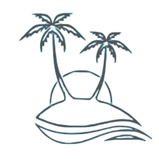
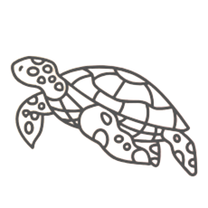

人口約700人、周囲は約23km
慶良間諸島と呼ばれるこの一帯は2015年に国立公園に指定。沖縄本島から約40km離れたこの島には年間およそ6万人もの人が毎年訪れています。ダイビングやカヤック・SUPなどガイド付きマリンアクティビティが盛んなだけでなく、ミシュラングリーンガイドにも掲載された、古座間味ビーチでのスノーケリングや夕焼けスポットとして人気のマリリンの像、また島内にある5か所の展望台ではそれぞれ違った景色が楽しめます。レンタルサイクルや電動キックボードなども充実しているので、自分に合った楽しみ方がきっと見つかるはず!


WELCOME
TO
ZAMAMI
「世界が恋する海」
船のアクセス方やアクティビティ
島での滞在についてご紹介します！

about

activity
- セルフスノーケリング
- 古座間味ビーチ
レンタルショップもあって一日中楽しめる人気No. 1のビーチ。泳ぐもよし、ビーチチェアとパラソルを借りてのんびりするもよし。- 阿真ビーチ
タイミングによってはウミガメと一緒に泳げるかも？夕陽スポットとしても人気のビーチです。 - 阿真ビーチ
- ダイビング
- まずは体験ダイビングで水中世界を楽しみましょう。
- すでにCカードをお持ちのかたはファンダイビング。のんびり、ワイワイ、カメラ派など好みのスタイルで慶良間ブルーを満喫！
- ダイビングで世界は広がる！興味を持った方はぜひ、Cカード講習を
- カヤック・SUPツアー
- もっとお手軽に座間味を楽しみたいなら、カヤック・SUPもおすすめ!ガイド付きでスノーケリングも楽しめるプランがあります。
- 島探検・ホエールウォッチング
- 自転車やバイクを借りて島内散策！ビーチだけでなく、望台巡りもおすすめです。
1月〜3月中はホエールウオッチングが楽しめます!遭遇率ほぼ100%!?運が良ければ間近で迫力満点のアクションが見られます！

- 日帰り
- 帰りの船の時間まで、めいいっぱい満喫!
港すぐの「yukuru館」ではシャワーが借りられます。 - 宿泊
- 島内には民宿やゲストハウスなどの宿泊施設も充実!予約は電話やメールからの問い合わせがまだまだ主流です。島内には3つの集落があり、港からすぐの座間味集落は一番人気。飲食店も充実。
- ご飯について
- 残念ながらランチを食べられるお店が少なめなので、要注意。夜はがっつり食べられる定食屋や居酒屋がたくさん!
- 買い物
- 座間味集落にある、座間味島唯一のスーパー。朝7時〜夜9時ごろまで、ほぼ年中無休で空いています!ないものは、ないお店です。

{kind=link}
{kind=link}
{kind=link}
- フェリー座間味
- 泊港から約2時間。フェリーなので車やバイクも一緒に乗せられます。1日1便のみ
- 高速船クイーン座間味
- フェリーよりも小さいぶん、スピードが出るので約1時間で到着。1日最大3便で朝一番早い便に乗って、最終便で日帰り滞在される方もたくさん。
{kind=link}